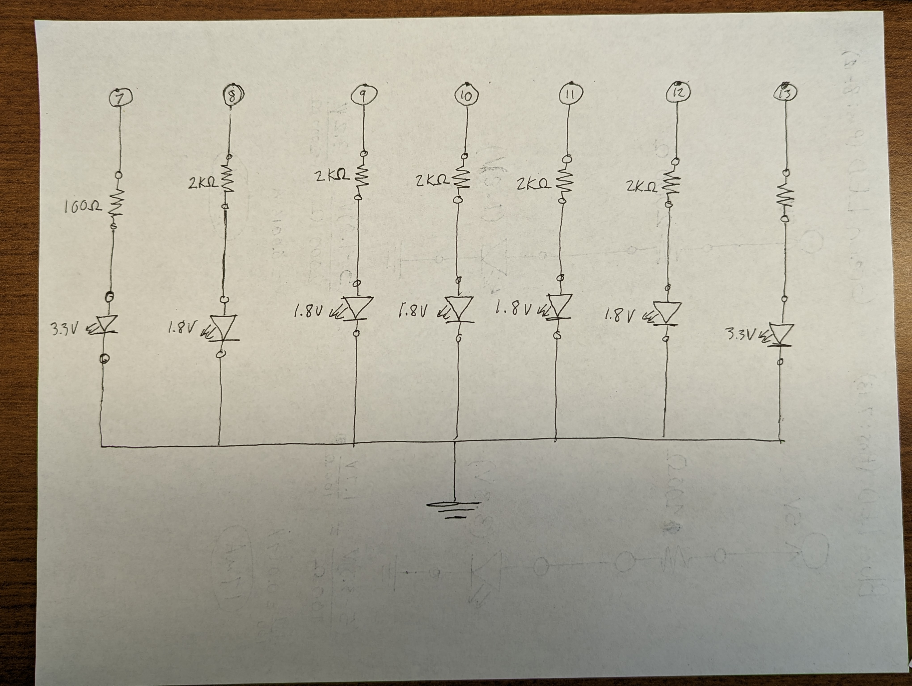
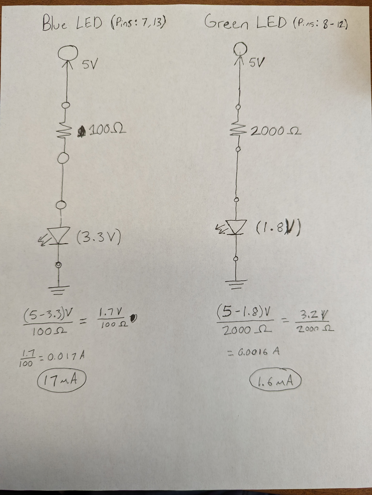
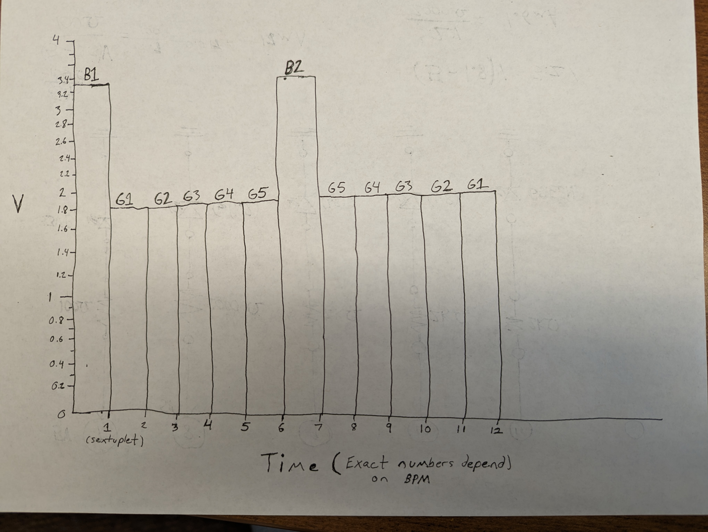

Sam's Assignment 1!

For assignment 1, I made a metronome! It uses two blue LEDs to signify beats and put five green LEDs between them. I used higher value resistors for the green LEDs so they would have a lower current and be dimmer than the blue LEDs.
Code
void setup() {
// initializes digital pins 7-13 as outputs
pinMode(13, OUTPUT);
pinMode(12, OUTPUT);
pinMode(11, OUTPUT);
pinMode(10, OUTPUT);
pinMode(9, OUTPUT);
pinMode(8, OUTPUT);
pinMode(7, OUTPUT);
}
// initializes variables
float bpm = 100; // user writes the bpm here
float time_per_beat = (60/bpm)*1000; //finds milliseconds per beat
float time_per_led = time_per_beat/6; //finds an equal amount of time for 6 LEDs per ber beat
void loop() {
for (int i=7; i < 13; i++){ //this loop lights up the blue LED on the left then the green LEDs, going right
digitalWrite(i, HIGH); // turns the indexed LED on
delay(time_per_led); // holds with the LED on for calculated time
digitalWrite(i, LOW); // turns the idexed LED off
}
for (int i=13; i > 7; i--){ //this loop lights up the blue LED on the right then the green LEDs, going left
digitalWrite(i, HIGH); // turns the indexed LED on
delay(time_per_led); // holds with the LED on for calculated time
digitalWrite(i, LOW); // turns the idexed LED off
}
}
Schematic

Below is a close up of a schematic for an individual blue and green LED circuit. Respective currents are calculated below each.

Breadboard

Questions
1: Draw a graph where the X axis is time and the Y axis is voltage across the LEDs. Draw a line for each of your 3 LEDs.
Since there are many LEDs I have instead labeled lines when they are non-zero.

2: How many LEDs could you blink independently with your Arduino? How much current would that draw?
There are 14 I/O pins, so 14. If the current across each LED was 20mA, the total current going to ground would be
(20mA*14) 280mA.
3: How fast do you need to blink your LEDs until you no longer can tell that they are blinking?
For me, around a 10 millisecond delay.